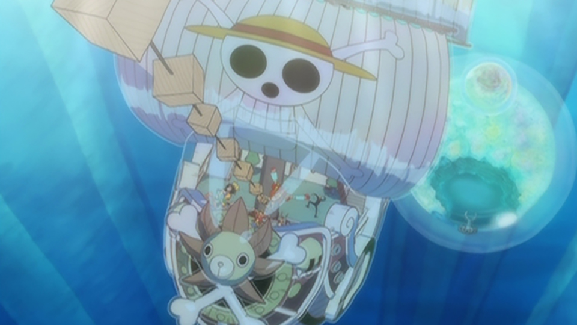

魚人島編
２年後
海軍本部と〝王下七武海〟、そして白ひげ海賊団による頂上戦争より２年。無人島での修行を終えたルフィは、仲間達との約束の地、シャボンディ諸島へと向かう。その頃、シャボンディ諸島では、「麦わらの一味復活」のニュースに島中がわいていた。一味が新たな仲間を募集しているとの噂も広まり、それを聞きつけた海軍も調査に乗り出す。
そんな事とは露知らず、続々と集結する麦わらの一味。ナミとウソップは、立ち寄った酒場で、ルフィの名を騙る〝三枚舌のデマロ・ブラック〟とその一味と出くわす。一方、遅れて到着したルフィは、ブラックの部下をゾロとサンジだと勘違いし、彼らと共に46番グロ－ブへ。そこではブラックを〝麦わらのルフィ〟と信じた海賊達が一堂に会していた。その中には、億超えのルーキー〝濡れ髪のカリブー〟をはじめ、名の知れた賞金首の姿も。
ROMANCE DAWN for the new world
そこへ〝麦わらの一味〟を捕らえるべく、戦桃丸率いる海軍が姿を見せる。戦桃丸は一目で〝ニセモノ〟と見抜き、ブラックを一撃のもとに倒す。騙されていた事に気づき、騒然となる海賊達。そのさなか、戦桃丸が連れて来たパシフィスタが、群衆の中からルフィを発見。だがルフィはその攻撃を難なくかわし、かつて苦戦したパシフィスタをたったの一撃で粉砕する。さらにゾロとサンジも駆け付け、二人もまたパシフィスタを瞬時に撃破してみせる。
「〝海賊王〟に!!!おれはなるっ!!!!」。ルフィは見送りに来たレイリーに高らかにそう宣言すると、仲間が待つ42番グローブへ。誰一人欠ける事なく、無事再会を果たした麦わらの一味は、〝新世界〟の入り口である魚人島へ向け、出発する。
海底１万ｍ
 海底１万メートル、巨大なシャボンに包まれた島〝魚人島〟。そこでルフィ達を待ち受けていたのは、ホーディ・ジョーンズ率いる新魚人海賊団だった。
手下になれと迫る彼らの包囲網を突破し、上陸を果たした一行。だが美しい人魚達を目にしたサンジが、興奮のあまり鼻血を出しすぎて出血多量に陥ってしまう。チョッパーは魚人たちに輸血を頼むが、誰一人として協力してくれる者はいなかった。この島では、魚人が人間に血を分け与える事は禁じられていたのだ。
魚人島の冒険
人間の海賊から血を分けてもらい、サンジも回復。とそこへ、国王ネプチューンが現れ、一同を竜宮城へと招待する。そこでルフィは、王族の人魚姫・しらほしと出会う。
ひょんな事から彼女と行動を共にする事になったルフィだったが、誤解から姫をさらった誘拐犯にされてしまう。
一方その頃、ホーディはかねてからの計画を実行に移す。人間を憎む彼は、人間との共存を望む王家の打倒を目論んでいた。機は熟したとみたホ－ディは、しらほしを付け狙う魚人の海賊バンダー・デッケン九世と手を組み、クーデターを起こす。
１０万vs１０
ネプチューン王と息子の王子達をとらえたホーディは、広場でその公開処刑を行うと宣言。それを知ったルフィ達は、彼らを救うべく、広場に殴り込みをかける。ホーディ率いる新魚人海賊団はその数10万。対する麦わらの一味はジンベエを加え、わずか10人。だがルフィは〝覇王色の覇気〟でその半数を一瞬で殲滅。仲間達も２年の間に身に付けた力を発揮し、敵を次々と倒し、幹部達をも圧倒していく。
そんな中、バンダー・デッケンが自身の能力を発動し、〝古の方舟ノア〟をしらほしに向けて飛ばすという暴挙に出た。ホーディはそのノアを魚人島に落とし、島を壊滅させようと企む。
激闘の末、ホーディを倒したルフィは、落下していくノアを何とか破壊しようと試みるが、その船体はあまりにも巨大過ぎた。だが、これまでかと思われた次の瞬間、巨大な海王類達がノアを引き上げ、魚人島への衝突は回避された。
新世界からの声
戦いで負った怪我で、出血多量となり倒れるルフィ。魚人達がルフィに感謝しつつも輸血を躊躇する中、ジンベエが名乗り出て、自らの血を分け与える。それは魚人と人とが手を取り合える、その証だった。
戦いを終え、皆が宴で楽しいひと時を過ごす中、ロビンはしらほしが〝古代兵器ポセイドン〟と呼ばれる存在である事を突き止める。さらにルフィ達は、ジンべエから海軍の新元帥に赤犬が就いた事、そして力を増した黒ひげが、今や〝四皇〟の一人として位置づけられている事を知る。
そんな中、〝四皇〟ビッグ・マム配下のタマゴ男爵とペコムズが魚人島を訪れる。目的は魚人島がビッグ・マムに納めていたお菓子の回収。だが先の戦いでお菓子工場も破壊され、納める分のお菓子は用意できていなかった。「お菓子を用意できなければ、魚人島が滅ぼされる」。それを知ったルフィは、お菓子は自分が全て食べたと偽り、魚人島は自分のナワバリにすると宣言。ビッグ・マムに正面切って宣戦布告する。